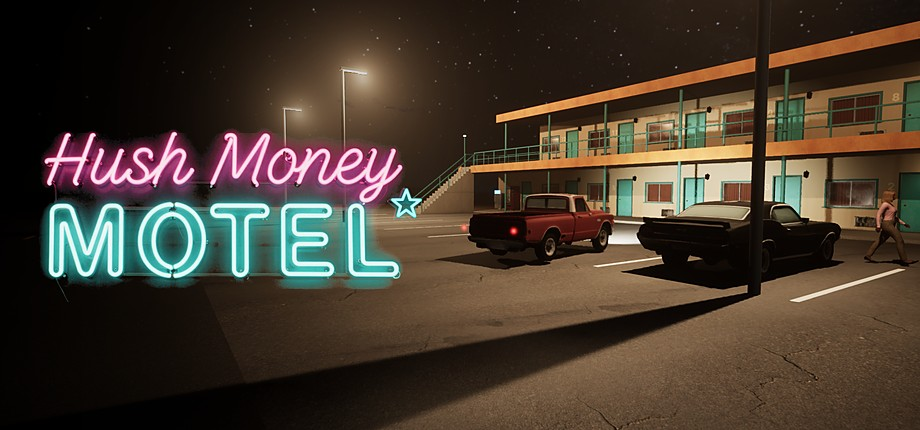
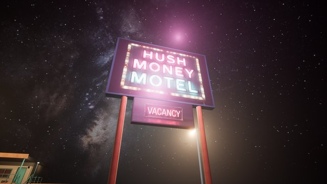
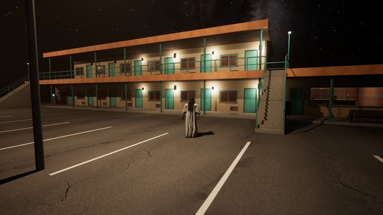
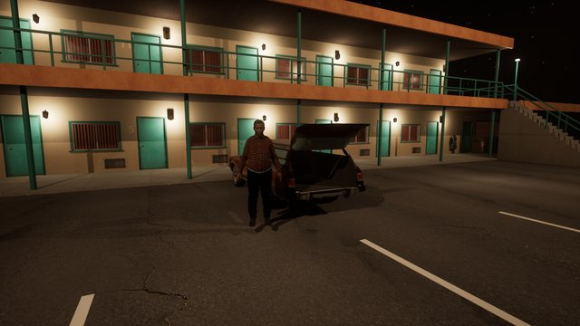
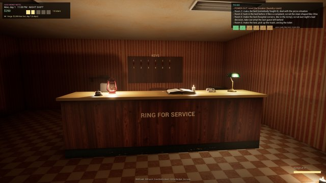
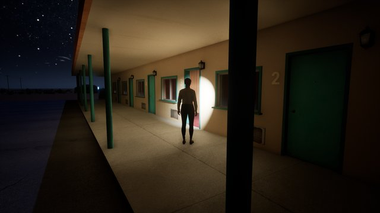
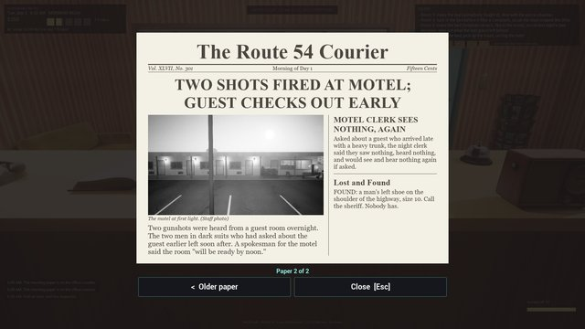
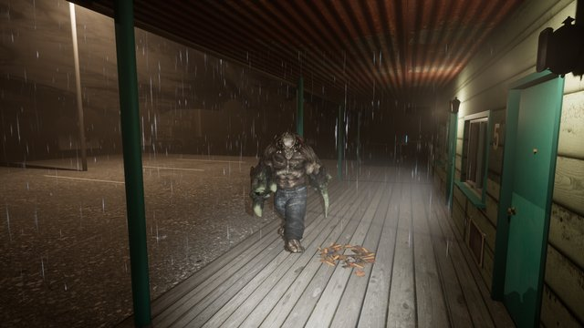
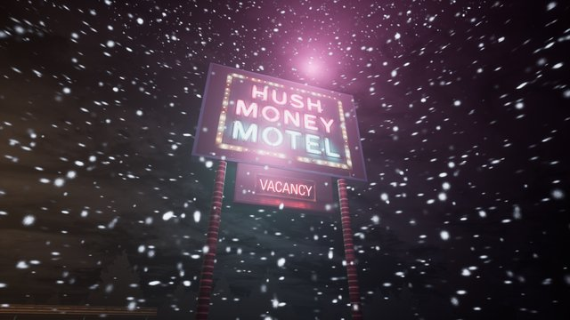

Hush Money Motel: press kit
- Developer
- Kelbra Games (Kelbra Business Solutions LLC), Missouri, USA
- Release
- 2027, Steam (Windows PC). Exact date and price to be announced.
- Players
- 1 to 4, online co-op, or solo
- Genre
- Co-op horror, management, crime
- Setting
- American roadside motels, late 1970s to early '80s: the Arizona desert, a Louisiana swamp, a Colorado mountain pass
- Engine
- Unreal Engine 5
- Language
- English (text, voices and subtitles)
- Press contact
- support@kelbrasolutions.net
- Pages
- Support · Privacy
The game
You and up to three friends just bought the Hush Money Motel on Highway 54, a long way from anywhere, with a loan from Mr. Varga. He owns car washes in three towns, and none of them wash cars. Every Sunday evening his long black car pulls in for the week's payment. Come up short at midnight and the motel is his.
By day it's a job: check travelers in at the front desk, make beds, scrub stains, plunge toilets, unjam the ice machine and flip the breakers when the power trips.
By night the real guests arrive, and each one has a rule:
- "Don't look in the trunk."
- "Never open the office door to him after midnight."
- "She must never see her reflection."
- "Knock exactly three times."
Some are criminals. Some are not human. All of them pay well to keep it quiet. Break a rule and something comes looking for you: hide under a bed, in the closet or behind the shower curtain, and hold your breath. At 7 AM the county inspector walks the property, and every bloodstain or shell casing you missed is a strike. Three strikes and the motel is shut down.
Pay off the motel in four weeks and the map opens: a motor court at the edge of a Louisiana swamp, then a lodge on a Colorado mountain pass. Each has its own lender, its own weather, its own story and its own legend.
Features
- 1 to 4 player online co-op, or solo.
- More than 20 night guests, each with a rule and a story; every night's line-up is different.
- Hide, listen, hold the door: beds, closets, showers, the peephole, candles and an oil lamp when the power goes out.
- Keep a guest's secret for hush money, or sell it, and they may come back for you.
- Hide the evidence before the 7 AM inspection: mop blood, stash briefcases, throw a tarp over the car.
- Three motels, three stories, nine story endings.
- Upgrade the motel into a hideout and grow it: a safe, a camera, a freezer, a second floor, more rooms.
- Co-op tools: walkie-talkie calls from the office camera, and an optional traitor night.
- A radio on the front desk with five 1970s and '80s stations.
- Easy, Normal and Hard, plus an endless mode.
Screenshots
All pictures are real in-game captures (1920x1080). Click a picture for the full size.
















Logo and art


Download all images (zip, 10 MB)
All 21 screenshots, the logo, the Steam capsules and the icon. A trailer made from real gameplay will be on the Steam page; email us if you need the video file.
Content
Horror and dark crime themes: murder, kidnapping and drug dealing in the story, blood to clean up (there is a Less blood setting), frightening supernatural characters and jump scares. Violence mostly happens off screen.
About AI use
Some content was made with AI tools during development and then reviewed and edited: some textures and pictures, some 3D props, the spoken voices (open-source voice models; every voice is made up, no real person is copied) and the radio songs. Nothing is generated while you play. The store pictures and this press kit use only real in-game captures.
About Kelbra Games
Kelbra Games is a small independent studio in Missouri. Hush Money Motel is one of three co-op games it is bringing to Steam.